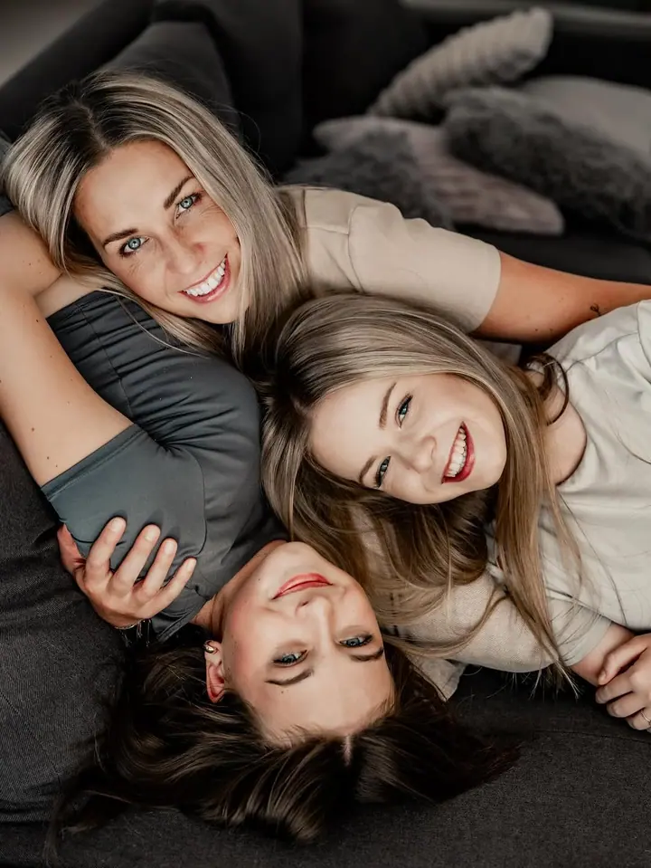
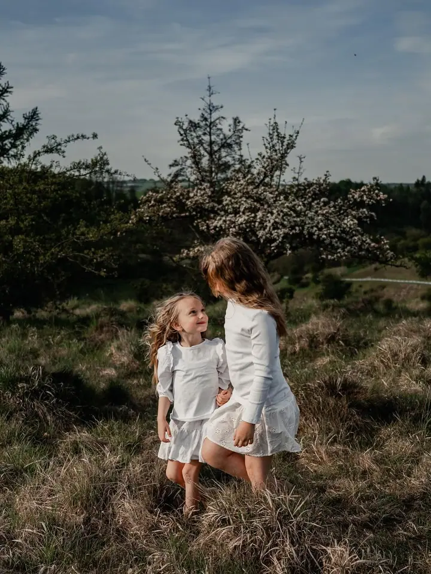
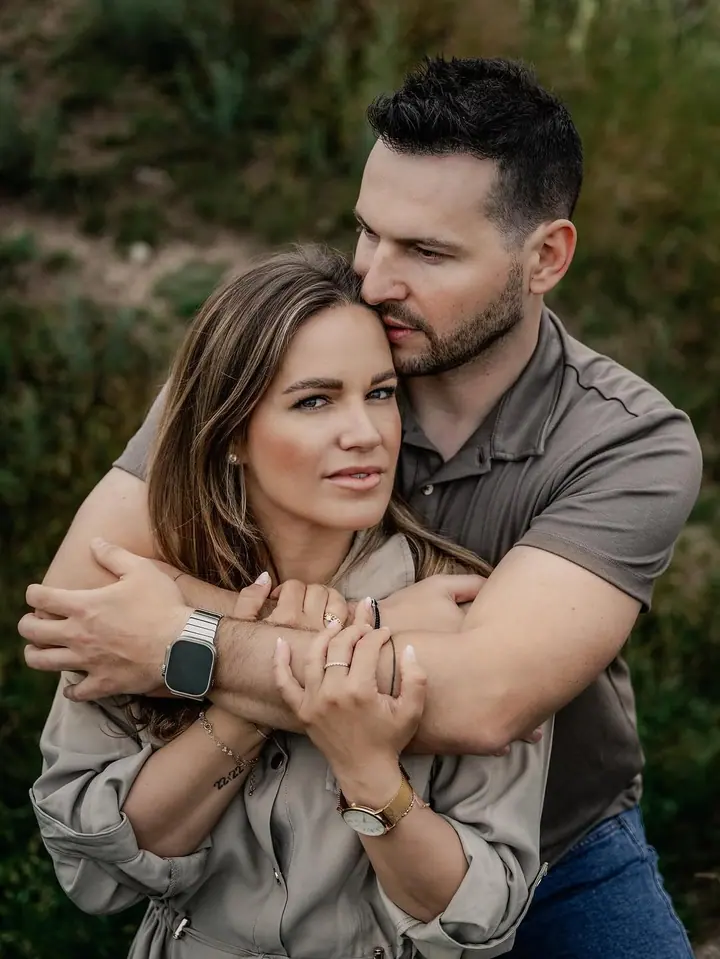

Rodinné focení
Nejčastěji fotím děti a rodiny, venku v přírodě i v ateliéru. Hledám to nejlepší světlo a nechávám emoce plynout přirozeně.

Jmenuji se Veronika Pernicová a jsem rodinná fotografka z Blanska. Nejčastěji fotím děti a celé rodiny, ráda vás doprovodím i svatebním dnem. Fotím kdekoli v přírodě i v…
Rezervovat termínMiluji životní příběhy. Vaši lásku, emoce i zdánlivě obyčejné chvíle, které se po letech ukážou jako ty nejdůležitější. S radostí vás doprovázím na vaší cestě životem a pomáhám je uchovat.


Často mě uvidíte s foťákem v ruce, jak hledám to nejlepší světlo. Nikoho nenutím do strnulých póz, emoce se snažím zachytit přirozeně. Každé focení prožívám spolu s vámi a beru ho jako jedinečný příběh.
Moc ráda fotím venku v přírodě nebo v zajímavém exteriéru kolem Blanska a Brna. Zároveň mám ráda jednoduchost portrétu v ateliéru, proto fotím také v ACROBAT studiu v Blansku. Díky vám mám tu nejlepší práci na světě.
Co fotím
Nejčastěji fotím děti a rodiny, venku v přírodě i v ateliéru. Hledám to nejlepší světlo a nechávám emoce plynout přirozeně.
Portrét venku v zajímavém exteriéru nebo v ateliéru. Mám ráda jednoduchost portrétu, kde vynikne hlavně člověk.
Ráda vás doprovodím během vašeho svatebního dne. Lásku, emoce i drobné chvíle mezi tím zachytím tak, jak se opravdu staly.
Občas se věnuji i promo fotografii pro vaši značku nebo podnikání. Přirozené fotky, které vás ukážou takové, jací jste.
Postup
Ozvěte se přes formulář, e-mailem nebo telefonem. Napište, co byste si přáli fotit a kdy by se vám to hodilo.
Společně vybereme místo, buď venku v přírodě, nebo v ateliéru v Blansku, a najdeme termín s nejhezčím světlem.
Žádný stres ani strnulé pózy. Děti si můžou hrát, vy se můžete smát a já mezitím fotím to, co se mezi vámi opravdu děje.
Fotky pečlivě vyberu a upravím a pošlu vám je v online galerii, abyste si je mohli stáhnout a sdílet s blízkými.
Otázky
Nejraději fotím venku v přírodě nebo v zajímavém exteriéru v okolí Blanska a Brna. Pokud chcete fotit uvnitř, máme k dispozici ateliér ACROBAT studio v Blansku.
To je úplně v pořádku. Na děti netlačím a nechávám jim prostor. Nejhezčí fotky často vzniknou právě ve chvílích, kdy se nic nepovede podle plánu.
Ano, rodinné focení v ateliéru s vánoční atmosférou patří k mým oblíbeným. Termíny se rychle plní, proto se ozvěte s předstihem.
Ano, ráda vás doprovodím během vašeho svatebního dne. Napište mi datum a místo a domluvíme se na podrobnostech.